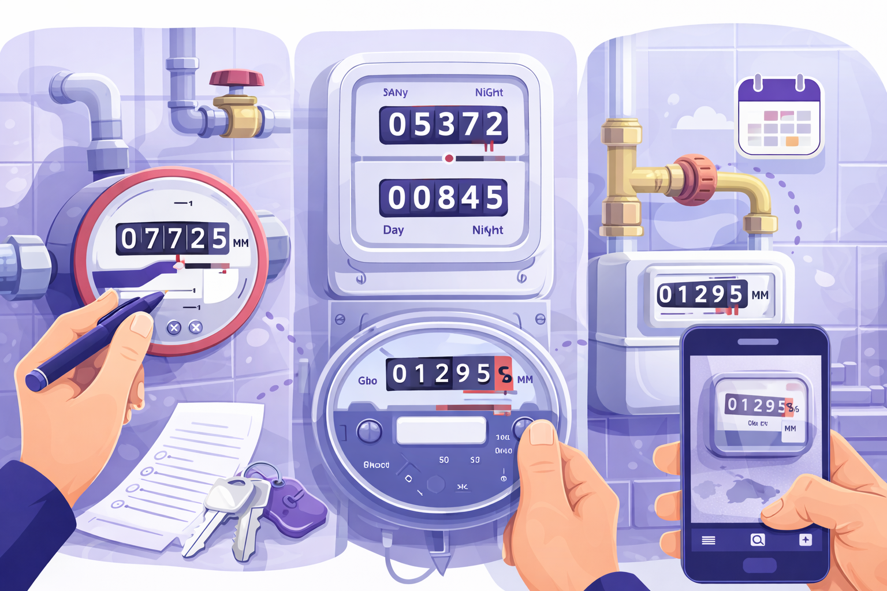
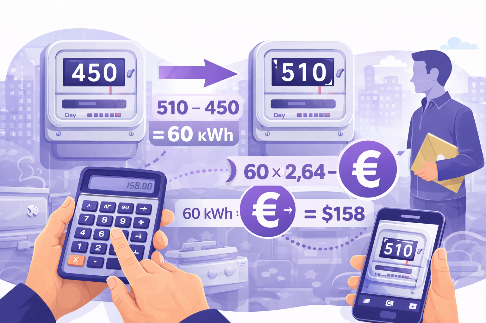
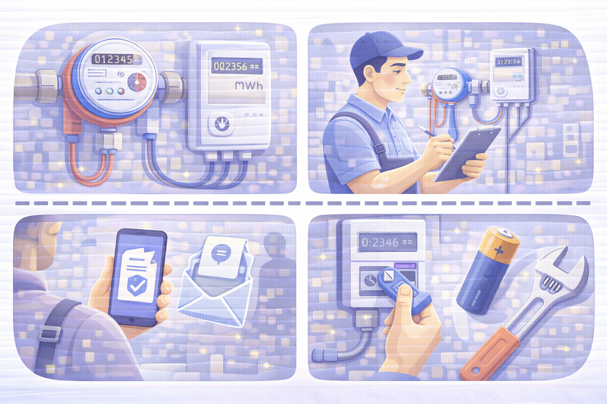
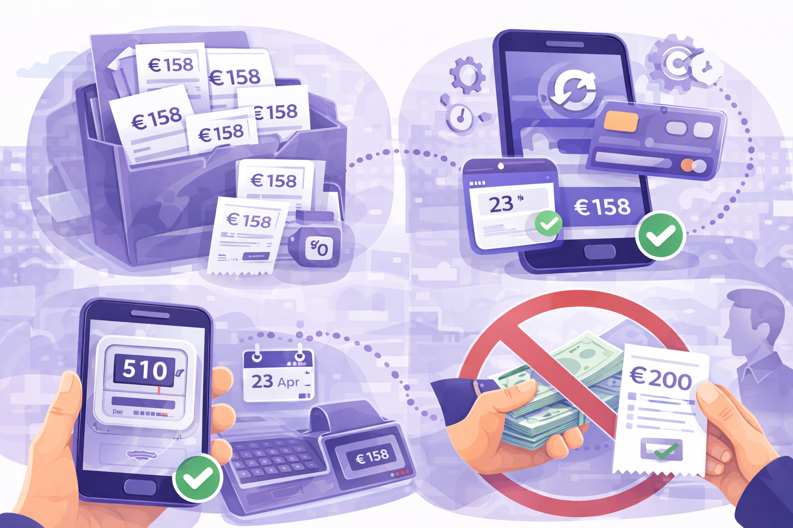

Комуналка для новачків
Лічильники і рахунки: як платити без проблем.

Лічильники — що дивитися
Що записуєш
- Холодна/гаряча вода → цифри до коми (без дробу)
- Електрика → цифри до коми (у нових – день/ніч окремо)
- Газ → цифри до коми
- Тепло → цифри з комою
Лайфхак: завжди фотографуй лічильник з датою – доказ у разі суперечок.
Де передавати показники
- Дія → Комуналка (електрика, вода, теплоенергія, газ у деяких містах)
- Сайти постачальників: наприклад, Київводоканал, Київтеплоенерго, Yasno, облгаз
- Через власника квартири - якщо домовились письмово; проси квитанції/скрини

Як перевірити чи правильно нарахували
1. Показники лічинка зараз - попередні = кількість спожитого
2. Множиш на тариф → має бути приблизно така сума
Приклад:
- Було 450 кВт → стало 510 кВт → 510 – 450 = 60 кВт
- Тариф 2,64 грн → 60 × 2,64 = 158 грн
Якщо сума не сходиться → фото лічильника + звернення до постачальника!
Як оплатити
- Приват24/Монобанк
- Сайт постачальника
- Через власника
1. Відкриваєш «Комунальні платежі»
2. Вводиш адресу або постачальника
3. Перевіряєш суму
4. Оплачуєш → зберігаєш скрин
1. Передаєш показники
2. Натискаєш «Оплатити»
3. Зберігаєш квитанцію
1. Домовляєшся письмово, що він платить за тебе
2. Надсилаєш гроші → отримуєш квитанцію/скрин

Як обслуговувати лічильники
- Повірка лічильників тепла і води — раз на 4 роки. Це платна послуга, часто виконують без зняття лічильника. Замовляй у компаній, які видають квитанцію про оплату. Після виконання надійде офіційний Акт повірки державного зразка.
- Щорічна перевірка лічильників. Її проводять працівники Київводоканалу та Київтеплоенерго. Якщо ти не вдома — сфотографуй показники та передай через консьєржа або у Telegram-канал Центру комунальних сервісів твого району (наприклад, CKS_DARN).
- Заміна батарейки в теплолічильнику — кожні 4 роки. Робиться разом із повіркою. Якщо батарейка сяде й лічильник згасне — нарахування підуть за середніми показниками, що значно дорожче. Послуга платна, замовляй лише у компаній з квитанцією. Дешевше змінювати батарейку разом із повіркою. Обовʼязково забери стару батарейку для утилізації.

Корисні поради
- Зберігай всі скрини/квитанції.
- Автоплатіж зручний, але перевіряй, щоб сума збігалася.
- Фото лічильника на день заселення = доказ при суперечках.
- Власник не має права вимагати «доплату без квитанцій».
- Вмикай світло лише в кімнаті, де перебуваєш — це економить до 40% електроенергії.
- Вимикай електроприлади, якщо не користуєшся ними — вони теж споживають енергію в режимі очікування.
- Не відкривай вентиль тепла, якщо тепла зима — можна прогріти приміщення кондиціонером чи тепловентилятором дешевше.
- Якщо вікна продувають — замов регулювання та/або заміну гумових ущільнювачів.
- Стеж, щоб крани не протікали — навіть невелика протічка збільшує витрати води й грошей.